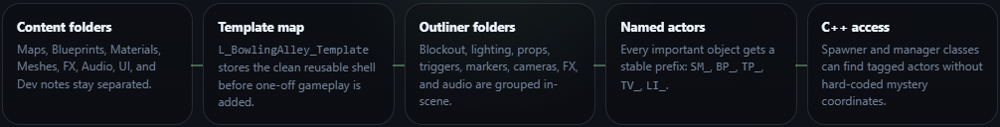
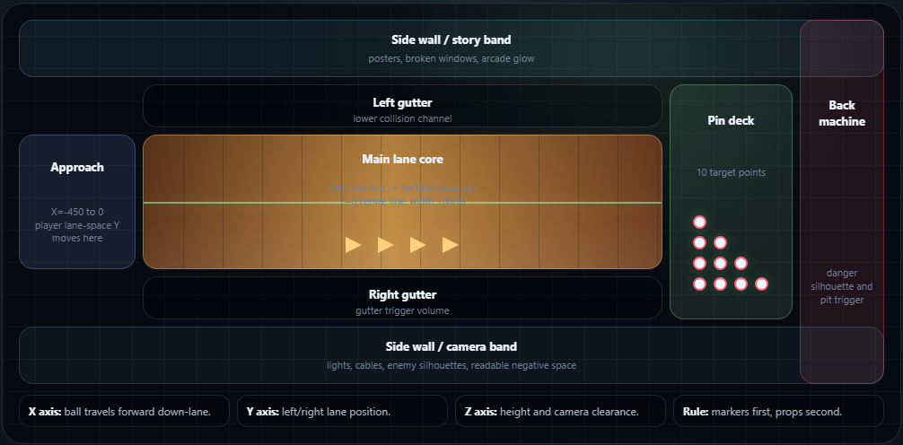
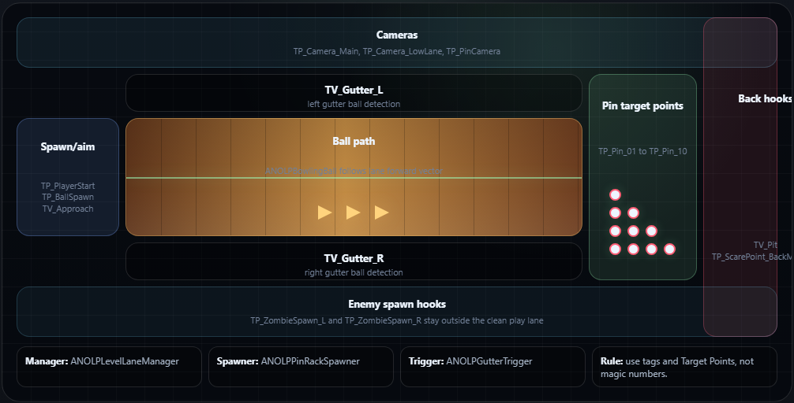
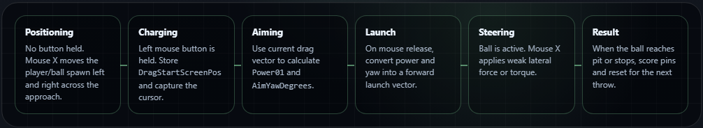
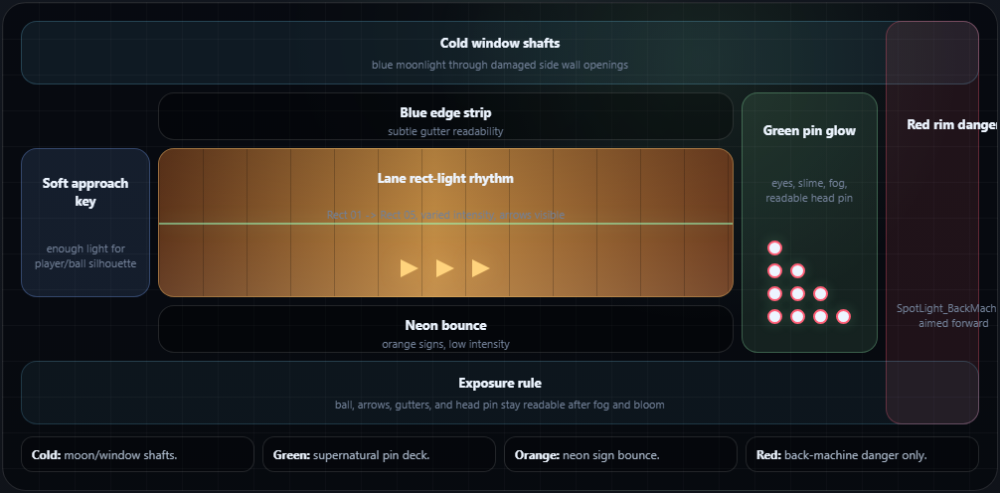
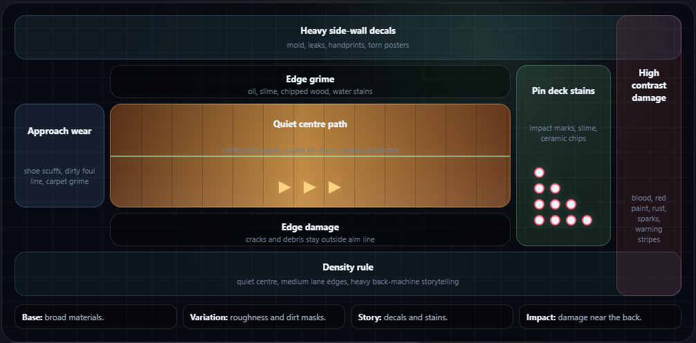
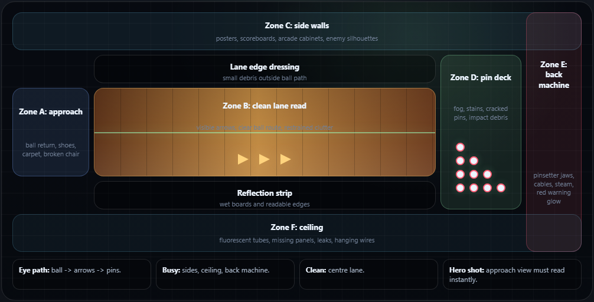

Key art: lane chase
Use for hero composition, ball impact energy, lane reflections, logo treatment, and foreground threat scale.
This is your visual production guide for the first level of Night of the Living Pins. The goal is not just to make a nice room. The goal is to build a clean UE5 template with sensible scale, lighting, triggers, markers, art zones, and reusable structure for future levels.
Use the supplied artwork as the visual north star. The level should read as a playable bowling lane first, then as a crowded arcade-horror scene with undead staff, cracked living pins, green ectoplasm, orange neon, moonlit blue shadows, and a dangerous back-machine focal point.

Use for hero composition, ball impact energy, lane reflections, logo treatment, and foreground threat scale.

Use for VFX timing, debris arcs, green energy, crowd pressure, and pin collapse silhouettes.

Cracked ceramic, red band, exposed skull face, glowing eyes, slime, chipped base, and asymmetrical damage.
The game needs a reason for the player to keep throwing. Keep it simple, readable, and arcade-first: every frame is another attempt to break the cursed machine before the living pins rebuild themselves.
You play the late-shift arcade mechanic trapped inside Bowl-O-Rama after the cursed Lane 13 pinsetter wakes up. The doors lock, the scoreboards bleed green light, and every living pin knocked down drains power from the back machine. Clear enough frames, rescue the trapped staff ghosts, and shut the lane down before sunrise.
The scoreboard flashes FREE GAME after closing. A single ball rolls back by itself, already glowing with ectoplasm.
Smash cursed pins, bank tickets, and drain the pinsetter's soul meter before the machine reaches full power.
The pins are not passive targets. Missed shots let them rebuild, taunt the player, and spawn lane hazards.
Each frame adds pressure: flickering lights, moving gutters, slime patches, staff zombies, and faster pin recovery.
Strikes pay out cursed tickets for ball upgrades, lane cleanses, extra steering, and emergency rerolls.
The final frame turns the pinsetter into the boss target. The player must bowl through chaos and hit the heart of the machine.
Before building Lane 13, learn the few panels you will touch constantly. Most level work follows the same loop: place an Actor, select it, rename it, set its transform in Details, organize it in the Outliner, then save the level.
If your editor does not look like this, use Window > Load Layout > Default Editor Layout, then reopen any missing panel from the Window menu.
| When this guide says... | Do this in the editor | Check before moving on |
|---|---|---|
| Create a Content folder | Open Content Drawer, right-click inside Content or your project folder, choose New Folder, then name it exactly. | The folder appears under Content/NightOfTheLivingPins, not loose in a random plugin or engine folder. |
| Create an Outliner folder | In the Outliner, use the folder button or right-click empty space and create a folder. Drag selected actors into it. | Actors are grouped by purpose: blockout, lighting, props, gameplay markers, triggers, FX, audio, cameras. |
| Place a cube | Open Place Actors, choose Shapes, drag Cube into the viewport, then set exact transform values in Details. | The actor name, Location, and Scale match the table before you duplicate it. |
| Add a Target Point | Open Place Actors, choose Basic, drag Target Point into the viewport, rename it, then type its Location in Details. | Target Points sit where future code expects ball, pin, camera, enemy, and scare positions. |
| Add a Trigger Volume | Open Place Actors, choose Volumes, drag a Trigger Volume or Box Trigger, then resize it in Details. | It covers the gameplay area cleanly without relying on messy art mesh collision. |
| Assign a material | Select the mesh actor, open Details, find the Materials section, and choose the material or material instance slot. | The lane center remains readable after applying grime, roughness, wetness, or decals. |
A tidy level is easier to art-direct, easier to hook up to C++, and much easier to duplicate for future stages. This folder structure gives you a clean base before you place a single cube.
Create this structure under Content. Do it now, before your test assets pile up.
Content/
NightOfTheLivingPins/
Maps/
Blueprints/
CppHelpers/
Materials/
Instances/
Decals/
Meshes/
Blockout/
Environment/
Gameplay/
Props/
Lighting/
FX/
Audio/
UI/
Dev/
Screenshots/
Notes/Create the map as L_BowlingAlley_Template. In the Outliner, create folders that match the way you will think while building.
00_BLOCKOUT
01_LANE_CORE
02_WALLS_CEILING
03_LIGHTING
04_PROPS_DRESSING
05_GAMEPLAY_MARKERS
06_COLLISION_TRIGGERS
07_FX
08_AUDIO
09_CAMERASContent and create NightOfTheLivingPins.Maps as L_BowlingAlley_Template.SM_, TP_, TV_, RectLight_, or BP_.L_BowlingAlley_Template, then duplicate later to L_Lane13_Prototype so the clean template is never damaged.Build the level as a chain of clean containers. Each stage feeds the next one, so art, collision, markers, and code hooks do not become tangled.

In this guide, the ball travels along positive X. Y is left/right, and Z is up. This matches the way UE represents forward, side, and height values in the editor.
The visible diagram is now built on a strict grid: approach, gutters, lane core, pin deck, and back machine each occupy their own aligned cells.

Unreal uses colored transform handles: red is X, green is Y, and blue is Z. For this lane, drag or type red/X values to move down the lane, green/Y values to move left and right, and blue/Z values to change height.
Select the actor, open the Details panel, then expand Transform. Type Location, Rotation, and Scale values directly into the numeric fields. Press Enter after each value and save when the object lands correctly.
Use cubes first. Do not worry about final meshes yet. The important thing is to make the scene playable, understandable, and easy to iterate.
| Actor name | Location X/Y/Z | Scale X/Y/Z | Purpose |
|---|---|---|---|
SM_Blockout_Approach | -225 / 0 / 0 | 4.5 / 3.5 / 0.08 | Player launch area before the foul line. |
SM_Blockout_LaneSurface | 914.5 / 0 / 0 | 18.29 / 1.06 / 0.06 | Main playable bowling lane. |
SM_Blockout_Gutter_L | 914.5 / -65 / -4 | 18.29 / 0.24 / 0.06 | Left gutter, slightly lowered. |
SM_Blockout_Gutter_R | 914.5 / 65 / -4 | 18.29 / 0.24 / 0.06 | Right gutter, slightly lowered. |
SM_Blockout_Rail_L | 914.5 / -84 / 8 | 18.29 / 0.12 / 0.14 | Left capping rail. |
SM_Blockout_Rail_R | 914.5 / 84 / 8 | 18.29 / 0.12 / 0.14 | Right capping rail. |
SM_Blockout_PinDeck | 1935 / 0 / 0 | 2.1 / 1.8 / 0.08 | Pin and boss-threat area. |
SM_Blockout_BackWall | 2150 / 0 / 150 | 0.25 / 6.5 / 3.0 | Back wall / pinsetter backdrop. |
SM_Blockout_Wall_L | 850 / -300 / 140 | 27.0 / 0.20 / 2.8 | Left environment boundary. |
SM_Blockout_Wall_R | 850 / 300 / 140 | 27.0 / 0.20 / 2.8 | Right environment boundary. |
SM_Blockout_Ceiling | 850 / 0 / 300 | 27.0 / 6.5 / 0.15 | Low oppressive ceiling. |
00_BLOCKOUT or the more specific Outliner folder.Use this to check the greybox before dressing. The lane can stay physically accurate while the room around it becomes wider, taller, and more theatrical for horror readability.

Markers are the bridge between the level and your future C++ code. They let you spawn balls, pins, cameras, scare events, and enemies without hard-coding weird coordinates later.
Create 10 Target Point actors in 05_GAMEPLAY_MARKERS / PinSpots. Use these names and positions.
TP_Pin_01: X=1829.0 Y=0.0 Z=0
TP_Pin_02: X=1855.4 Y=-15.2 Z=0
TP_Pin_03: X=1855.4 Y=15.2 Z=0
TP_Pin_04: X=1881.8 Y=-30.4 Z=0
TP_Pin_05: X=1881.8 Y=0.0 Z=0
TP_Pin_06: X=1881.8 Y=30.4 Z=0
TP_Pin_07: X=1908.2 Y=-45.6 Z=0
TP_Pin_08: X=1908.2 Y=-15.2 Z=0
TP_Pin_09: X=1908.2 Y=15.2 Z=0
TP_Pin_10: X=1908.2 Y=45.6 Z=0These give future code useful named points. Add actor tags like BallSpawn, PlayerView, FoulLine, and CameraTarget.
TP_BallSpawn: X=-250 Y=0 Z=45
TP_PlayerView: X=-380 Y=0 Z=90
TP_Camera_PlayerView: X=-620 Y=0 Z=180
TP_Camera_AimView: X=-510 Y=0 Z=155
TP_Camera_BallFollow: X=-160 Y=0 Z=95
TP_Camera_PinDeck: X=1700 Y=0 Z=120
TP_Camera_Result: X=1540 Y=0 Z=170
TP_Camera_Reset: X=1840 Y=0 Z=155
TP_Camera_LastPinCloseup: Dynamic from final pin transform
TP_ScarePoint_BackMachine: X=2050 Y=0 Z=90TV_Gutter_L detects left gutter balls.TV_Gutter_R detects right gutter balls.TV_Pit detects when the ball reaches the back.TV_ApproachArea enables pre-throw aiming and charging.FoulLineVolume blocks the player from crossing during active bowling.ANOLPBowlingBallANOLPPinBaseANOLPPinRackSpawnerANOLPGutterTriggerANOLPLevelLaneManagerANOLPCameraDirectorTP_ name.05_GAMEPLAY_MARKERS / PinSpots and camera/spawn points in matching subfolders.BallSpawn, PlayerView, FoulLine, CameraTarget, or ScarePoint.Place these before final art. The goal is that code can ask the level for named points and volumes instead of guessing where the ball, pins, camera, scare event, and enemies should be.

The whole game can be controlled with the mouse. The player slides left and right before the throw, holds the left mouse button to enter an aiming/charging gesture, drags upward for power, drags left or right for direction, releases to launch, then lightly steers the ball with mouse movement while it travels down the lane.
Think of the controls as a small input state machine. Before the throw, mouse X controls the player lane position. While the left button is held, the drag vector controls power and aim yaw. After release, mouse X becomes a light steering input.

This is a mouse-only lane-space throw mechanic using a pre-launch lateral positioning state, a click-and-drag charge/aim gesture, a launch impulse, and a post-launch steering assist. The important variables are player lane Y, drag vector, normalized power, aim yaw, launch speed, steering input, and steering force.
These state names are the lingo that will help ChatGPT understand what you want later. Each state has one job, which keeps the control code easier to build and debug.

CurrentThrowStateEnum: Positioning, Charging, Aiming, Launched, Steering, Result.DesiredLaneYThe player/ball lateral position in lane space.MinLaneY / MaxLaneYClamp limits so the player cannot move outside the allowed approach area.DragStartScreenPosMouse screen position when left button is pressed.CurrentDragVectorCurrent mouse position minus drag start position.Power01Normalized throw power from 0 to 1.AimYawDegreesLaunch angle left/right from the lane centre line.MaxAimYawDegreesMaximum allowed throw angle, for example 12 to 18 degrees.LaunchSpeedMin / LaunchSpeedMaxSpeed range created from power.SteerStrengthHow much control the player has after release.SteerInputMouse X converted to -1 to +1.BallForwardVelocityVelocity down-lane after launch.OnMouseMove:
if State == Positioning:
DesiredLaneY += MouseDeltaX * PositionSensitivity
DesiredLaneY = Clamp(DesiredLaneY, MinLaneY, MaxLaneY)
if State == Steering:
SteerInput = Clamp(MouseDeltaX / SteerPixelsForFullInput, -1, 1)
OnLeftMouseDown:
State = Charging
DragStartScreenPos = CurrentMouseScreenPos
CaptureMouse()
OnMouseDragWhileHeld:
CurrentDragVector = CurrentMouseScreenPos - DragStartScreenPos
Power01 = Clamp(-CurrentDragVector.Y / MaxPowerDragPixels, 0, 1)
AimYawDegrees = Clamp(CurrentDragVector.X / MaxAimDragPixels, -1, 1) * MaxAimYawDegrees
State = Aiming
OnLeftMouseUp:
LaunchDirection = LaneForwardVector rotated by AimYawDegrees
LaunchSpeed = Lerp(LaunchSpeedMin, LaunchSpeedMax, Power01)
LaunchBall(LaunchDirection, LaunchSpeed)
State = SteeringUse this wording: I need a UE5 C++ or Blueprint mouse-only bowling control system with states for Positioning, Charging, Aiming, Launch, Steering, and Result. Mouse X moves lane-space Y before launch. Left mouse drag up maps to normalized power, drag X maps to aim yaw, release applies launch impulse, and post-launch mouse X applies weak lateral steering.
The player should feel locked into an old haunted bowling lane, not free-roaming down the alley. Start behind the ball at the foul line, follow the ball after release, show impact and zombie reactions, then return clearly when the next throw is ready.
The camera should behave like a small arcade director: it frames the setup, follows the ball, sells the hit, lets the zombie pins react, then clearly returns the player to the foul line. It can be cinematic, but the ball, aim, pins, score state, and next input moment must always be understandable.
TP_PlayerViewTP_BallSpawnFoulLineVolumeTV_Gutter_L can trigger tilt, UI, laugh, and reduced steering.BallFollowView tracks behind and above, looking ahead toward pins.TV_Gutter_R uses the same short failure flow.Build the readable version first. Special camera moments should be short, optional, and event-driven.
ANOLPCameraDirector as the only actor that chooses camera states.This order keeps the camera useful while gameplay is still rough. It starts with the readable loop, then adds comedy and cinematic polish after the throw/reset flow works.
FoulLineVolume, TV_ApproachArea, MinLaneY, and MaxLaneY. The player/ball can slide left and right, aim, charge, launch, and lightly steer, but never walk down-lane.TP_Camera_PlayerView, TP_Camera_AimView, TP_Camera_BallFollow, TP_Camera_PinDeck, TP_Camera_Result, and TP_Camera_Reset before final art.ANOLPCameraDirector target references, current state, blend settings, follow offsets, and event handlers. Do not spread camera decisions across the ball and pins.PlayerView -> ChargeView -> LaunchView -> BallFollowView -> PinImpactView -> ResultView with temporary ball and pin placeholders.CLICK ANYWHERE TO PLAY, then blend back to the foul-line camera after click.The default camera is behind the ball at the foul line, slightly above waist height, looking down the lane. It should feel spooky, but stable enough for accurate aiming.
| Actor or variable | Use | First-pass guidance |
|---|---|---|
TP_PlayerView | Logical player staging point in the approach area. | Use it as the place the player feels anchored before each throw. |
TP_BallSpawn | Ball reset point for every throw. | Keep it behind the foul line and inside the legal Y range. |
FoulLineVolume | Invisible boundary that prevents lane walking. | Block player movement, but do not block the launched ball. |
TV_ApproachArea | Area where aiming and charging are allowed. | Input is enabled only when camera return is complete. |
MinLaneY / MaxLaneY | Clamp values for left/right ball placement. | Wide enough to aim, narrow enough to stop impossible side shots. |
ApproachArea | Gameplay concept for the pre-launch control zone. | Use in code comments and Blueprint names so the rule stays clear. |
ENOLPCameraStateEach state should have one job, one readable focus, clear entry and exit events, and a small set of exposed tuning variables.
| State | Camera job | Keep readable | Entry event | Exit event | Useful tuning |
|---|---|---|---|---|---|
| WaitingForClick | Hold on a resolved lane state and show the next-turn prompt. | Remaining pins, score result, active player, CLICK ANYWHERE TO PLAY. | OnLaneResetComplete | OnPlayerClickedToPlay | bWaitForClickBeforeNextThrow, ClickToPlayText |
| PlayerView | Frame the approach from behind the ball. | Ball, aim direction, lane arrows, pin rack, score, turn UI. | OnTurnStarted | OnAimingStarted | PlayerViewBlendTime, IdleCameraBreathAmount |
| AimView | Focus slightly for line-up without hiding the lane. | Ball start Y, aim line, gutters, pins, hazards. | OnAimingStarted | OnPowerCharging or cancel | AimViewZoomAmount, AimViewBlendTime |
| ChargeView | Add tension while the player holds the mouse button. | Power meter, aim line, ball glow, pin silhouettes. | OnPowerCharging | OnBallLaunched | ChargeViewCameraShake, MaxPowerShakeThreshold |
| LaunchView | Sell the release with a short push and shake. | Ball leaving spawn, direction, initial speed. | OnBallLaunched | Launch beat finishes | LaunchShakeStrength, LaunchPushDistance |
| BallFollowView | Track behind and above the rolling ball while looking ahead. | Ball, lane, hazards, gutter drift, pins in distance. | Launch beat finishes | OnBallEnteredGutter, OnBallNearPinDeck, pit, or stop | BallFollowDistance, BallFollowHeight, BallLookAheadDistance, BallFollowLag |
| GutterView | Show the failure clearly and briefly. | Which gutter, ball, UI result, zombie reaction. | OnBallEnteredGutter | Ball reaches pit or stops | GutterCameraDuration, GutterTiltAmount |
| PinImpactView | Frame the collision as the ball reaches the deck. | Ball, head pin, pin scatter, important reactions. | OnBallNearPinDeck or OnBallHitPin | Pins settle or scoring begins | PinDeckCutDistance, ImpactCameraShakeStrength |
| LastPinDramaView | Cut to the last standing pin for a quick spare comedy beat. | Pin face, incoming ball direction, short voice line. | OnLastPinSpareChance | Impact or timeout | LastPinDramaDistance, LastPinDramaSlowMo, LastPinDramaZoom |
| StrikeView | Celebrate a first-throw clear. | Final falling pins, score text, machine reaction. | OnStrike | Presentation finishes | StrikeSlowMoScale, StrikeCameraDuration |
| SpareView | Reward clearing the remaining pins on throw two. | Last falling pin, SPARE!, score update. | OnSpare | Presentation finishes | SpareCameraDuration, SpareCameraFocusOffset |
| ResultView | Let the player understand the outcome. | Fallen pins, standing pins, score, combo, open/strike/spare result. | OnThrowResolved | OnPinsAdvancing or reset | PinSettleWaitTime, ResultDisplayDuration |
| ResetView | Show pin clearing, surviving pin movement, and machine reaction. | Standing pins, shuffle distance, next-turn UI. | OnPinsAdvancing or reset start | OnLaneResetComplete | ResetCameraDuration, PinAdvanceSpeed |
| ReturnToPlayerView | Move from resolved lane back to the foul-line camera. | Camera destination, ball reset, no accidental input. | OnPlayerClickedToPlay | Blend complete | ReturnToPlayerBlendTime, ReturnToPlayerCameraStyle |
This is the rhythm to test in Play In Editor before adding rare cinematic variants.
CLICK ANYWHERE TO PLAY. Input for aiming is still disabled.TP_Camera_PlayerView. Ball resets to TP_BallSpawn.MinLaneY and MaxLaneY.Each playbook has a trigger, camera action, feedback layer, and exit rule. This keeps comedy moments from dragging or confusing the player.
PinDeckCameraTriggerDistance or hits a pin.ResultView.TV_Gutter_L or TV_Gutter_R.GUTTER!, gutter roll audio, reduced steering, zombie laugh or machine chuckle.Socket_FaceCameraTarget.SpareView if the pin falls.STRIKE!, big sound, sparks, machine anger, brief slow motion only for strong hits.OPEN FRAME.PLAYER 2 - THROW 2 or ROTTEN RANDY IS LINING UP A SHOT....The camera system stays clean if gameplay actors send facts and the director decides presentation.
CurrentCameraState, blend target, active cinematic timeout.OnBallLaunched, OnBallEnteredGutter, OnBallNearPinDeck, OnBallStopped.OnTurnStarted, OnThrowResolved, OnPinsAdvancing, OnLaneResetComplete, OnMatchEnded.OnTurnStarted
SetState(PlayerView)
DisableThrowInput()
WaitForBlendComplete()
OnAimingStarted
SetState(AimView)
OnPowerCharging
SetState(ChargeView)
OnBallLaunched
SetState(LaunchView)
QueueState(BallFollowView)
OnThrowResolved
SetState(ResultView)
if StandingPinsRemain:
SetState(ResetView)
AdvanceSurvivingPins()
SetState(WaitingForClick)Run this check only while the ball is active. It should trigger rarely enough to stay funny.
CurrentThrowInFrame == 2
StandingPinCount == 1
bLastPinDramaPlayed == false
BallIsActive == true
BallDistanceToLastPin < LastPinDramaStartDistance
BallIsHeadingTowardLastPin == true
LastPinLateralDistanceFromBallPath
< LastPinDramaHitPredictionWidthStanding pins are not just leftovers. They become the zombie pressure system.
MaxSurvivingPinAdvanceDistance.PlayerViewBlendTimeAimViewBlendTimeAimViewZoomAmountIdleCameraBreathAmountbEnableInputAfterCameraReturnChargeViewCameraShakeLaunchShakeStrengthLaunchPushDistanceLaunchViewDurationPowerMeterGlowScaleBallFollowDistanceBallFollowHeightBallLookAheadDistanceBallFollowLagBallFollowRotationLagHighSpeedCameraShakeThresholdPinDeckCutDistanceImpactCameraShakeStrengthGutterCameraDurationGutterTiltAmountResultCameraDelayPinSettleWaitTimeResultDisplayDurationResetCameraDurationbWaitForClickBeforeNextThrowReturnToPlayerBlendTimeReturnToPlayerCameraStylebAllowSurvivingPinAdvanceSurvivingPinAdvanceDistanceSurvivingPinAdvanceRandomOffsetMaxSurvivingPinAdvanceDistancePinAdvanceSpeedbPinsAdvanceOnlyAfterMissbEnableLastPinDramaCameraLastPinDramaStartDistanceLastPinDramaHitPredictionWidthLastPinDramaSlowMotionScaleLastPinDramaDurationLastPinDramaZoomAmountLastPinDramaVoiceLineStrikeSlowMoScaleStrikeCameraDurationSpareCameraDurationScorePopupDurationCursedMachineReactionDelayUh oh..., surviving pins creeping closer after a weak throw, and the cursed machine snapping the view back to the foul line for one more shot.The lighting target is a readable golden-brown lane surrounded by cold darkness, with dirty green and red accents around the pin deck. The player should always know where to aim.
Location: X=100, Y=0, Z=270
Intensity: 150–400
Width: 250
Height: 20
Place copies at X=450, 800, 1150, 1500, and 1850. Vary intensity so the lighting feels broken instead of perfectly even.
SpotLight_BackMachine
X=2080, Y=0, Z=180
Intensity 800–1500. Aim toward the pins.
03_LIGHTING.Select SpotLight_BackMachine, press E for Rotate, and aim the cone toward the pin rack. For accuracy, type Rotation values in Details after rough aiming in the viewport.
Switch the viewport to Lit, press G for Game View, and take a screenshot from the approach. If the ball path or head pin disappears, reduce fog/bloom or raise lane key light.
The lane surface gets a controllable light rhythm. Horror accents sit off-centre and behind the pins so the player can still aim while the environment feels hostile.

Use long shadow shapes, dead corners, low ceiling pools of light, and one strong back glow. The best horror lighting leaves some parts unseen, but never hides the gameplay lane itself.
The ball path needs to read immediately. Use the foul line, target arrows, rails, and a subtle lane reflection to guide the eye toward the pins.
Use dynamic lighting where it matters: flicker lights, emissive monitors, scare moments, and the pin machine. Keep unnecessary small lights out of the prototype until the gameplay is proven.
Atmosphere sells the abandoned horror feeling, but too much fog kills readability. Use fog as depth and beams, not as a grey blanket over the whole lane.
0.015–0.04.0.2–0.5.0.25–0.45.Treat atmosphere as layered visibility control. The highest contrast stays on the playable lane and pin rack; heavier fog belongs at the back machine, floor edges, and distant wall openings.

Use base materials for structure and decals for storytelling. Decals let you add grime, cracks, stains, and damage without building everything into the mesh.
M_Lane_RottenWood
M_Gutter_DarkMetal
M_Wall_StainedConcrete
M_Ceiling_DirtyTiles
M_Rail_RustyMetal
M_FoulLine_DirtyPaint
M_Emissive_SicklyGreen
M_Emissive_RedExit
M_Decal_Grime
M_Decal_BloodSmear
M_Decal_WaterDamageMI_Lane_RottenWood_01
MI_Lane_RottenWood_Wet
MI_Concrete_GreenTint
MI_Concrete_Moldy
MI_Rust_Dark
MI_ExitSign_Red
MI_Monitor_GlitchGreenMaterials.M_ prefix.Materials/Instances so you can tune color, roughness, wetness, and grime without rebuilding the base material.04_PROPS_DRESSING or a dedicated decal folder so they stay manageable.The strongest detail goes at the edges and focal points. The centre of the lane gets controlled wear so the ball path, arrows, and pins remain legible.

Professional environment art is controlled. You are not filling space randomly — you are guiding the player’s eye from the ball to the lane to the zombie pins.
04_PROPS_DRESSING or the matching zone folder.When the scene gets crowded, select actors from the Outliner instead of hunting in the viewport. Use Outliner folders to hide side-wall clutter while checking the lane, then reveal everything for final screenshots.
This is the page's main dressing rule in diagram form. Fill the side walls, ceiling, and back machine with story. Keep the centre lane clean enough for aiming and physics feedback.

These cards link to official Unreal Engine documentation pages and use documentation screenshots where available. Use them when you need to find a panel, confirm a setting location, or remind yourself what a tool looks like.

Shows the menu bar, viewport, Outliner, Details panel, Content Drawer, and toolbars.
Open official guide →
Reference for moving around the scene, selecting actors, and understanding viewport navigation.
Open official guide →
Use this to remember where level actors and folders live while keeping the map clean.
Open official guide →
Where transforms, materials, physics, collision, lighting, and component settings are edited.
Open official guide →
Use when checking Dynamic Global Illumination and Reflection Method settings.
Open official guide →
Shows the Details panel area for enabling and tuning fog on the Exponential Height Fog actor.
Open official guide →
Useful for finding abandoned interior props, grime decals, rusty metal, and environment assets.
Open official guide →
Use this when turning the lane core, back machine, and approach dressing into reusable chunks.
Open official guide →
Save, play, mode switching, content shortcuts, and build/testing controls.
Open official guide →Once the lane feels good, do not keep copying random actors by hand. Group repeatable pieces so future levels are fast to create and easy to maintain.
LI_Lane_Core — lane, gutters, rails, foul line, arrows, pin deck.LI_Bowling_Shell — walls, ceiling, back wall.LI_BackMachine_Horror_01 — pinsetter props, cables, fog, lights.LI_Approach_Dressing_01 — ball return, carpet, shoe props, posters.Use the Outliner to verify the selection contains only the intended actors. Check Details for any accidental temporary meshes, test triggers, or prototype-only items before committing the chunk.
L_BowlingAlley_Template pure. Duplicate it to create playable maps. When a system is proven, move it back into the template.Build one reliable lane, then split it into repeatable chunks. Future levels should change dressing, lighting, hazards, and mood without rebuilding lane measurements or marker logic.

Tick these off as you work. Your progress is saved in this browser with local storage, so the page becomes your mini production board.
Progress will appear here after the checklist loads.
Showing every task.
Use this as a practical command centre while building. These are the things you will keep looking for as you learn the editor again.
| Task | Editor location | What to edit |
|---|---|---|
| Create project folders | Content Drawer / Content Browser | Right-click to create folders, then keep maps, materials, meshes, Blueprints, FX, audio, and dev notes separated. |
| Create or save the level | File menu and Main Toolbar Save button | Use L_BowlingAlley_Template for the clean template, then duplicate for playable variants. |
| Place cubes and simple shapes | Place Actors > Shapes | Drag into the viewport, rename in Outliner, type Location and Scale in Details. |
| Place lights | Place Actors > Lights | Set Intensity, color, Source Width/Height, attenuation, and mobility in Details. |
| Add fog/post process | Place Actors > Visual Effects | Select the actor and tune Volumetric Fog, Infinite Extent, exposure, bloom, vignette, and film grain in Details. |
| Add gameplay markers | Place Actors > Basic | Use Target Point actors, stable TP_ names, exact Location values, and Actor Tags. |
| Add collision and triggers | Place Actors > Volumes | Resize Trigger Volumes and Blocking Volumes in Details; keep gameplay collision simple during prototype. |
| Find lost actors | Outliner search | Search by prefix, select the actor, press F in the viewport to frame it. |
Night of the Living Pins is an unreleased game project currently in development. All information presented in this guide, including story details, game concepts, level plans, artwork references, design documentation, mechanics, names, terminology, and related materials, is provisional and may change before any public release.
All intellectual property, creative material, story content, characters, artwork concepts, game design information, and related project documentation for Night of the Living Pins are and remain the property of Robin Doak. Copyright © 2026 Robin Doak. All rights reserved.